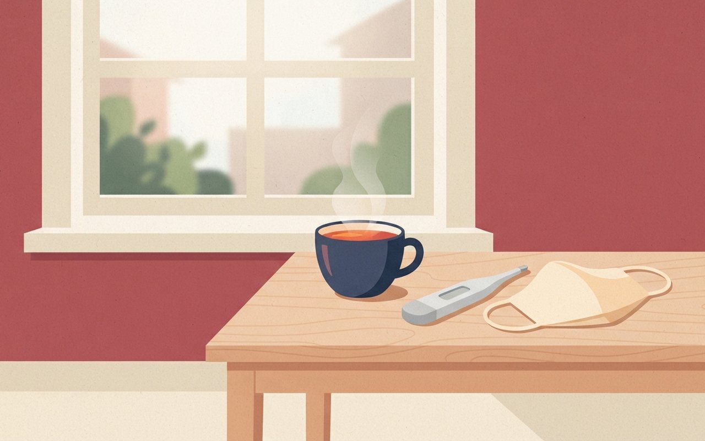
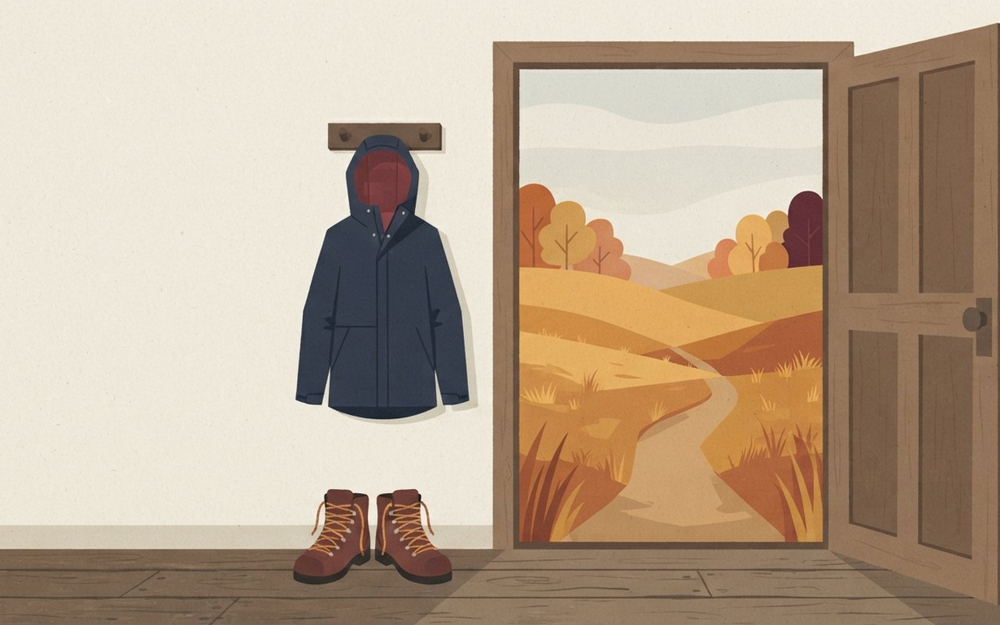
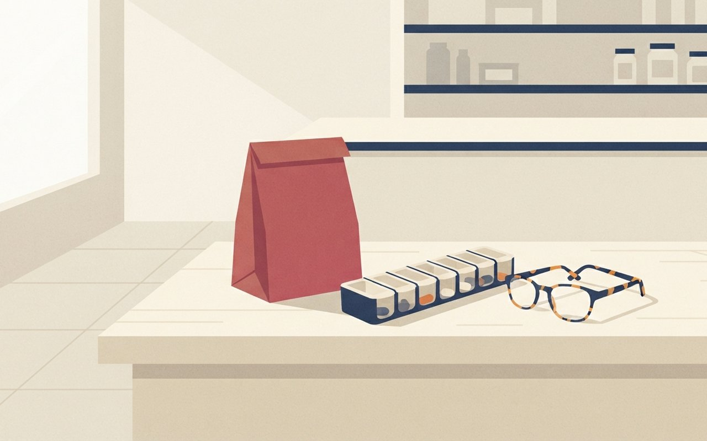
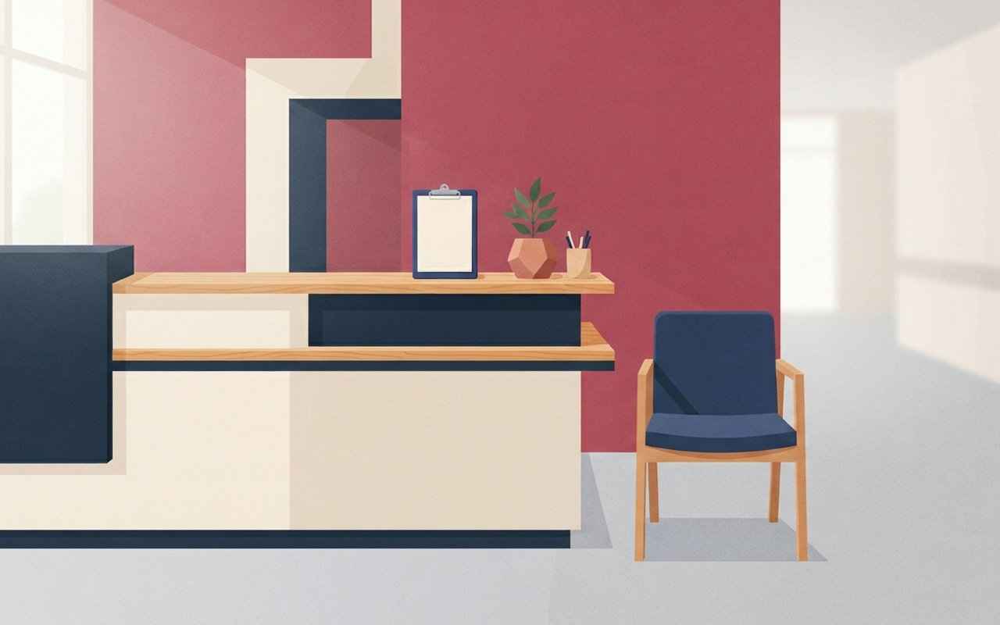
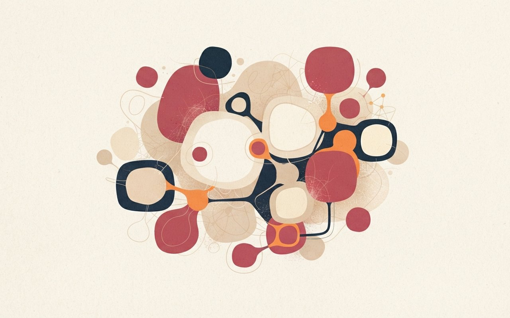

🎧 낭독 원고 보기
11월 3일 화요일, 헬스 브리프입니다.
독감 의심환자가 43주차 외래 1,000명당 19.2명으로, 3주 연속 줄다가 한 주 만에 다시 늘었습니다. 유행 기준 12.9명의 약 1.5배이고, 7세부터 12세는 1,000명당 49명으로 가장 많았습니다. 65세 이상도 늘었다며 질병청은 접종하지 않은 어린이와 65세 이상에게 서둘러 맞으라고 당부했습니다.
쯔쯔가무시증은 환자가 10월과 11월에 몰립니다. 질병청은 8월 26일부터 전국 18개 지점에서 털진드기를 감시하고 있고, 전북에서는 유충이 지난해보다 약 2주 일찍 확인됐습니다. 풀밭에 앉을 땐 돗자리를 쓰고, 돌아오면 바로 옷을 털어 세탁하고 샤워하세요. 열이 나면 병원에 가세요.
국정감사에서 비만치료제를 맞고 시신경병증 치료를 받은 환자가 104명 확인됐다는 자료가 나왔습니다. 기저질환이 고려되지 않아 인과관계는 입증되지 않았습니다. 같은 성분 중복 처방 경고를 넘긴 사례는 7만 18건이었고, 성분이 다른 약끼리는 경고도 뜨지 않습니다. 복지부 장관은 관리급여 검토체계에 넣겠다고 했을 뿐 결정된 것은 없습니다.
희귀·중증난치질환 산정특례 본인부담률이 12월에 10%에서 7%로 내려갑니다. 대상은 약 136만 명이고, 중증 당뇨병 기기 지원도 1형에서 중증 2형까지 넓어집니다. 다만 5%로 내려가는 시기는 매체마다 달라 확인이 필요합니다.
분당서울대병원 연구팀은 한국인 21명의 내장지방 세포 약 8만 6천 개를 분석했습니다. 염증과 굳음을 키우는 THBS1 단백질이 비만이 심할수록 늘었는데, 표본이 작고 상당 부분 세포와 쥐 실험이라 치료에 쓰기엔 이릅니다.
이상 헬스 브리프였습니다. 진단·처방이 아니며, 증상이 있으면 의료진과 상담하세요.
感
독감 유행
독감 3주 연속 감소 뒤 반등 — 43주차 외래 1,000명당 19.2명, 7~12세 49명으로 가장 많아
뉴스1(11월 2일)에 따르면 질병관리청 집계로 43주차 독감 의사환자분율은 외래환자 1,000명당 19.2명으로, 3주 연속 감소하다 한 주 만에 반등했다. 지난 10월 26일 뉴스1 보도의 유행 기준 12.9명과 견주면 약 1.5배다(19.2÷12.9, 편집부 계산이며 기사에도 "약 1.5배"로 표기). 지난주 브리프의 41주 21.6명보다는 낮은 수준이다.
연령별로는 7~12세가 1,000명당 49명으로 가장 많았고, 65세 이상도 늘었다고 기사는 전했다(65세 이상 수치는 기사에 없다). 질병청은 아직 접종하지 않은 어린이와 65세 이상에게 예방접종을 서두르라고 당부했다. 이번 기사에는 접종률과 코로나19 수치가 없다.
- 43주차외래 1,000명당 독감 의사환자 19.2명 · 3주 연속 감소 뒤 반등
- 유행 기준12.9명(뉴스1 10/26) · 기사 표기 "약 1.5배"
- 7~12세1,000명당 49명 · 연령별 최다
- 질병청 당부미접종 어린이·65세 이상은 예방접종 서두르기
🩺 알고 보면 달라지는 것
줄던 숫자가 다시 늘었다는 점이 달라졌다. 초등학생 자녀가 있거나 65세 이상 부모님이 있다면 접종 여부를 한 번 확인해 볼 만하다. 이 카드는 진단·처방이 아니며, 증상이 있으면 의료진과 상담하세요.
뉴스1 — 43주 반등·접종 당부 뉴스1 — 유행 기준 12.9명
19.2명·반등·7~12세 49명·질병청 당부는 뉴스1(11/2) · 유행 기준 12.9명은 뉴스1(10/26) · 1.5배는 19.2÷12.9 편집부 계산 · 43주차 기간은 기사에 없어 적지 않음 (확인 2026-11-03)
독감 3주 만에 반등,
유행 기준의 1.5배
43주차 독감 의사환자는 외래 1,000명당 19.2명으로 다시 늘었어요. 7~12세가 1,000명당 49명으로 가장 많았어요.
43주 의사환자:19.2|유행 기준:12.9
49명|7~12세 외래 1,000명당
19.2명|43주차 외래 1,000명당
A bright living room table with a thermometer, a cup of warm tea and a folded face mask beside a window with soft morning light, flat illustration, no people, no text, no logos

蟲
가을철 감염병
쯔쯔가무시증 환자가 몰리는 10~11월 — 질병청 털진드기 감시 18곳, 전북은 유충이 2주 일찍 나왔다
질병관리청은 8월 26일부터 전국 18개 지점에서 쯔쯔가무시증을 옮기는 털진드기 발생을 감시하고 있고, 환자 발생은 10월과 11월에 집중된다고 밝혔다. 보도자료는 국내 연간 환자 수를 약 3,000~6,000명으로 제시했다(주차별 올해 환자 수는 자료에 없다).
파이낸셜뉴스(10월 16일)에 따르면 전북도보건환경연구원은 올해 41주차(10월 1~7일) 감시에서 털진드기 유충을 처음 확인했다. 지난해 첫 발견인 43주차(10월 16~22일)보다 약 2주 빠르다. 전국 수치가 아닌 전북 한 곳의 감시 결과다.
- 감시8/26부터 전국 18개 지점 털진드기 감시(질병청)
- 환자 시기10월·11월에 집중 · 연간 약 3,000~6,000명
- 전북41주차(10/1~7) 유충 첫 확인 · 지난해(43주차)보다 약 2주 빠름
- 예방풀밭엔 돗자리 · 긴 옷·기피제 · 귀가 즉시 옷 털어 세탁·샤워 · 의심 증상은 즉시 진료
🩺 알고 보면 달라지는 것
성묘·단풍 나들이 철과 환자가 몰리는 시기가 겹친다. 진드기 유충은 눈에 잘 띄지 않으니, 풀밭에 다녀온 날은 샤워하며 검은 딱지 같은 벌레 물린 상처가 없는지 살피는 것이 질병청 수칙이다. 열이 나면 야외활동 사실을 의료진에게 알리자. 이 카드는 진단·처방이 아니며, 증상이 있으면 의료진과 상담하세요.
질병관리청 — 털진드기 감시·예방수칙 파이낸셜뉴스 — 전북 유충 2주 빨라져
18개 지점·10~11월 집중·연 3,000~6,000명·예방수칙은 질병청 보도자료(8/26 작성, 10/13 수정) · 전북 유충은 파이낸셜뉴스(10/16) (확인 2026-11-03)
쯔쯔가무시증,
10~11월에 몰린다
질병청은 전국 18곳에서 털진드기를 감시해요. 환자는 10~11월에 몰려요. 풀밭에 다녀온 날은 옷을 털어 세탁하고 바로 샤워하세요.
18곳|전국 털진드기 감시 지점
환자는 10월·11월에 집중 / 전북은 유충이 지난해보다 약 2주 일찍
18곳|전국 털진드기 감시
A hiking jacket and sturdy boots on a hook by an open door, dry autumn grass and golden fields seen outside, soft light, flat illustration, no people, no text, no logos

藥
비만치료제 안전
비만치료제 맞고 시신경병증 치료받은 환자 104명 — 인과는 입증 안 돼, 성분 다른 중복 처방은 경고도 안 뜬다
서울경제에 따르면 남인순 의원은 국정감사 관련 보도(10월 27일)에서 비만치료제 주사를 처방받은 뒤 시신경병증 치료를 받은 환자가 국내에서 104명 확인됐다고 밝혔다. 다만 기저질환 등이 고려되지 않아 비만치료제와의 인과관계는 입증된 것이 아니라고 전제했다. 같은 성분 중복 처방 경고에도 처방이 유지된 사례는 2024년 10월~2026년 8월 7만 18건이고, 올해 1~8월 3만 8,466건은 지난해 연간 3만 1,164건보다 23.4% 많다(심사평가원 자료, 서영석 의원).
성분이 다른 비만치료제끼리의 중복은 경고가 뜨지 않아, 위고비를 투여 중에 다른 병원에서 마운자로를 처방받아도 알림이 없다. 정은경 복지부 장관은 관리급여 검토체계 안에 넣어 검토하겠다고 했을 뿐 편입 여부와 시기는 정해지지 않았다. 아주경제는 식약처가 리라글루티드·세마글루티드·터제파타이드를 오남용 우려 의약품으로 지정하는 절차를 진행 중이며 본심사가 이르면 10월 30일 열릴 전망이라고(이후 결과는 확인하지 못했다), 지정돼도 의사 처방에는 영향이 없다고 전했다.
- 시신경병증비만치료제 처방 뒤 치료받은 환자 104명 · 인과관계 입증 안 됨(국감 자료)
- 중복 처방 경고 무시같은 성분 7만 18건(2024.10~2026.8) · 올해 1~8월 3만 8,466건 vs 지난해 연간 3만 1,164건(+23.4%)
- 사각지대성분이 다른 비만치료제끼리는 중복 경고 없음
- 정부관리급여 검토체계에 넣어 검토(결정 아님) · 편입 시 본인부담 95% · 식약처 오남용 우려 의약품 지정 추진
🩺 알고 보면 달라지는 것
주사를 맞는 중에 다른 병원에서 비만약을 또 처방받게 되면 시스템이 걸러주지 못할 수 있으니, 복용 중인 약을 진료 때마다 말하는 것이 안전하다. 시야가 갑자기 흐려지는 등 이상이 생기면 지체하지 말고 의료진과 상담하자. 이 카드는 진단·처방이 아니며, 약을 임의로 끊거나 바꾸지 마세요.
서울경제 — 국감 시신경병증·관리급여 아주경제 — 오남용 지정 추진
104명·7만 18건·3만 8,466건·3만 1,164건·23.4%·95%·관리급여 답변은 서울경제(10/27) · 오남용 우려 의약품 지정 절차(성분 3종, 의사 처방 무관, 본심사 이르면 10/30 — 결과 미확인)는 아주경제(10/28) · 의원 발언 인용이며 인과관계는 미입증 (확인 2026-11-03)
비만약 시신경병증
치료 환자 104명
비만치료제를 처방받고 시신경병증 치료를 받은 환자가 확인됐지만 인과관계는 입증되지 않았어요. 성분이 다른 비만약끼리는 중복 처방 경고도 뜨지 않아요.
7만 18건|같은 성분 중복 경고 무시
인과관계 입증 안 됨 / 성분 다른 약끼리는 경고 없음
A quiet pharmacy counter with a paper bag, a weekly pill organizer and a pair of reading glasses, soft daylight, flat illustration, no people, no text, no labels, no logos

保
건강보험 제도
12월 희귀·중증난치질환 본인부담률 10%→7% — 대상 약 136만 명, 중증 당뇨 기기 지원도 확대
경향신문(9월 8일)과 서울경제에 따르면 복지부 건강보험정책심의위원회가 의결한 '보장 1단계 혁신방안'으로 희귀·중증난치질환(산정특례) 환자의 본인부담률이 현재 10%에서 12월 7%로 낮아진다. 대상은 약 136만 명이고, 연평균 본인부담금은 75만 원에서 2027년 53만 원으로 줄 것으로 전망됐다.
인슐린자동주입기·연속혈당측정기 구입비 지원은 현재 1형 당뇨병 환자만 받지만, 경향신문은 12월부터 1·2형 구분 없이 중증도 기준으로 바뀐다고 전했다(서울경제는 시작 시점을 적지 않았다). 서울경제는 새로 혜택을 받는 중증 2형 환자를 약 1만 1,000명으로 봤다. 5%로 내려가는 시점은 경향신문이 내년 상반기, 서울경제는 2028년 상반기로 달라 이 카드에서는 확정하지 않는다. 보도 후 시행 고시가 바뀌었는지는 복지부 공지로 확인해야 한다.
- 산정특례본인부담률 10% → 12월 7% · 대상 약 136만 명
- 5% 시점경향 내년 상반기 · 서울경제 2028년 상반기 — 매체마다 다름
- 연 본인부담금75만 원 → 2027년 53만 원(전망)
- 당뇨 기기1형만 → 중증도 기준(경향 12월부터) · 중증 2형 약 1만 1,000명 신규
🩺 알고 보면 달라지는 것
산정특례 등록 환자나 중증 당뇨 환자 가족이라면 12월 시행 전에 본인이 대상인지 병원 원무과나 건강보험공단에 확인해 보자. 5%로 내려가는 시점은 보도마다 달라 공식 공지를 기다리는 편이 안전하다. 이 카드는 진단·처방이 아니며, 증상이 있으면 의료진과 상담하세요.
경향신문 — 산정특례·당뇨 기기 서울경제 — 혁신방안 상세
12월 7%·136만 명·75만→53만 원은 두 기사 일치 · 당뇨 기기 12월 시작은 경향신문만 · 약 1만 1,000명은 서울경제 · 5% 시점 불일치로 미표기 · 두 기사 모두 9/8 보도라 이후 변경은 복지부 공지로 확인 (확인 2026-11-03)
12월부터 본인부담
10%에서 7%로
희귀·중증난치질환 환자 약 136만 명이 대상이에요. 중증 당뇨병 기기 지원도 중증도 기준으로 넓어져요. 5%로 내려가는 시점은 보도마다 달라요.
10%|12월부터|7%
136만 명|산정특례 대상
7%|12월 산정특례 본인부담률
A tidy hospital reception counter with a clipboard, a small potted plant and an empty waiting chair, bright clean light, flat illustration, no people, no text, no logos

脂
내장지방 연구
내장지방은 '얼마나'보다 '어떤 상태'? 한국인 21명 지방세포 8만 6천 개 분석 — 굳음·염증 키우는 THBS1
파이낸셜뉴스(11월 3일)에 따르면 분당서울대병원 최성희·문준호 교수와 포스텍 김종경 교수팀은 한국인 21명(정상 체중 8명·비만 5명·당뇨 동반 비만 8명)의 내장지방 세포 약 8만 6천 개를 단일세포 수준으로 분석해 지난달 27일 국제학술지 네이처 커뮤니케이션즈에 실었다. THBS1이라는 단백질을 많이 만드는 세포가 정상 체중, 비만, 당뇨 동반 비만 순으로 늘었고, 수치는 BMI·당화혈색소와 함께 움직였다.
실험에서 THBS1은 대식세포를 활성화해 콜라겐 축적과 염증을 키웠고, 항체로 막으면 환자 조직의 섬유화 관련 유전자 발현이 줄고 고지방식 쥐의 지방조직 섬유화도 크게 줄었다. 연구진은 혈액 지표·치료 표적이 될 수 있다고 제안했지만 아직 검증되지 않았고, 표본이 작아 더 많은 사람과 다양한 집단이 필요하다고 밝혔다. 근거 상당 부분이 세포·조직·쥐 실험이다.
- 연구분당서울대병원·포스텍 · 네이처 커뮤니케이션즈(온라인 10/27)
- 대상한국인 21명 · 내장지방 세포 약 8만 6천 개 분석
- 발견THBS1 높은 세포 정상 < 비만 < 당뇨 동반 비만 · BMI·당화혈색소와 함께 변화
- 한계소규모(21명) · 세포·쥐 실험 중심 · 혈액검사·치료는 미검증
🩺 알고 보면 달라지는 것
당장 달라지는 검사나 치료는 없다. 내장지방을 양뿐 아니라 질로도 본다는 방향의 초기 연구로 읽으면 된다. 이 카드는 진단·처방이 아니며, 체중·혈당이 걱정되면 의료진과 상담하세요.
파이낸셜뉴스 — 내장지방 THBS1 연구
모든 사실은 파이낸셜뉴스(11/3 08:52) 단일 기사 · 논문 원문 미확인 · 특허 출원 언급은 기사에 있으나 싣지 않음 (확인 2026-11-03)
내장지방, 양보다
상태가 중요할까?
한국인 21명의 내장지방 세포를 분석했어요. THBS1 단백질이 많을수록 굳고 염증이 커졌지만, 치료에 쓰기엔 아직 일러요. 쥐 실험이 많아요.
THBS1 단백질|지방 굳음·염증 증가|내장지방 세포
21명|분석 대상 · 소규모
Soft pastel cluster of round cells in warm beige and coral tones, abstract conceptual schematic, not a real photograph, no text, no logos
